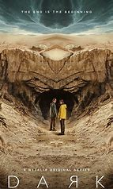

NETFLIX INDIA
SEARCH
tv programmes
dark
stranger things
squidgame
series
dark
stranger things
squidgame
wishlist
dark
stranger things
squidgame
SEASON OF DARK IS COMING
browse
dark
stranger things
squidgame
You have suggested serieses
This suspenseful series from Baran bo Odar and Jantje Friese won a Grimme-Preis award for television fiction. Number Of Seasons: 3
Content Rating: A
Start Date: 01/12/2017
Genre: Survival, Thriller, Horror, Drama, Action
McCune–Reischauer: Ojingŏ Keim
Hangul: 오징어 게임
Revised Romanization: Ojing-eo Geim
Mint of Spain as a criminal mastermind manipulates the police to carry out his plan Number Of Seasons: 5 Content Rating: TV-MA Start Date: 19/07/2019
a young girl with otherworldly powers.
Number Of Seasons: 4
Content Rating: U/A 16+
Start Date: 15/07/2016
8.5/10 (266K)
Content Rating: TV-MA
Stars: Jason Bateman, Laura Linney, Sofia Hublitz
Genre: Crime | Drama | Thriller
Release Date: 2017-07-21
Runtime: 60